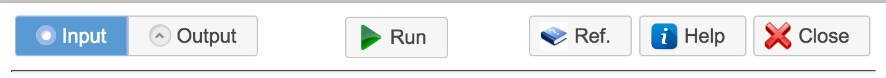
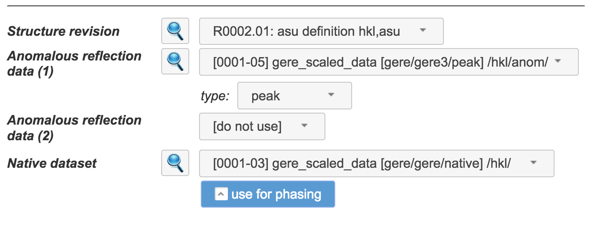
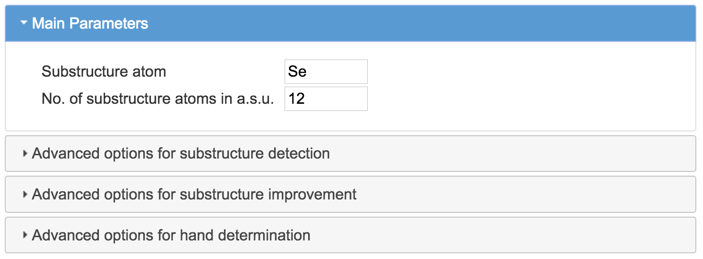
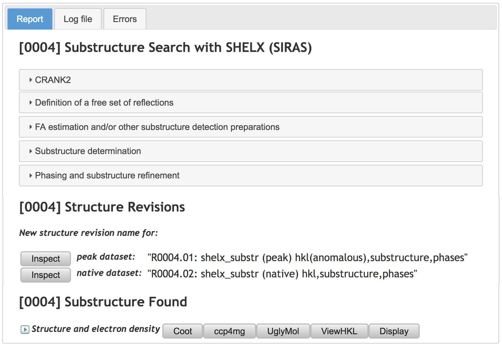

1.4. Job Dialog¶
Job Dialog is one of most central to CCP4 Cloud functionality. It is used for forming a job (choosing/setting input data and parameters), running it, and inspecting the results. The Dialog opens automatically upon selecting a task in the Task List or pressing the button in the Project Page toolbar (also available through right-clicking on the Job’s line of the Job Tree).
{kind=link}
1.4.1. General Layout¶
The dialog has two pages: Input and Output, and a toolbar in the upper part of the dialog:
{kind=link}
The buttons on the left-hand side of the toolbar switch between the Input and Output pages (the buttons are disabled if the Output page is not formed yet). The central part of the toolbar may show either the Run button for starting the job, or show a “busy” indicator and Stop button while the job is running or the final job status (“completed”, “failed”, “terminated”) if the job is finished. The Ref. button displays reference documentation on the task currently represented by the Dialog, while Help button provides the Dialog’s manual you are currently reading. The Close button on the right-hand side of the toolbar closes the Dialog without running the job.
1.4.2. Input Page¶
The Input page has three parts: the Header, Data Section and Parameters Section.
1.4.2.1. The Header¶
The Header displays the Job Title and two input fields: job description and output id:
Both fields always have default parameters, which may be found suitable in many cases. However, sometimes you will want to adjust them.
job description |
Provides a brief job description for displaying in the Job Tree. This field may be used to annotate your project, for example, “2nd molecular replacement attempt using sequence correction of the model”. The field may be changed both before and after running the job. |
output id |
Provides a template name output data. Please see the “Naming” section in Data Management. Using this field will help to obtain and download output files with more meaningful names. |
1.4.2.2. Data Section¶
Data Section contains selection widgets (comboboxes) for data objects needed by a given job. Typically, a job takes several types of data, each of which will be represented by its own Combobox. Some jobs may accept several data objects of a particular type, in which case the combo boxes are repeated. In the following example:
{kind=link}
the job takes one Structure Revision, one or more anomalous HKL Datasets, and one native HKL Dataset. Correspondingly, the Data Section presents one Combobox for structure revision, one for native dataset, and a variable number of comboboxes for anomalous reflection datasets. Initial selections in all comboboxes are chosen according to intrinsic task and project logic and should be suitable in most cases; however, this must be checked in each and every case.
In the above example, the second combobox for anomalous dataset shows [do not use]. This means that only one anomalous HKL dataset, selected in the first combobox, will be passed on to the job. If a user selects a dataset in the second combobox as well, it will be passed as second anomalous dataset to the job, and another combobox with the title “Anomalous reflection data (3)” and initial value [do not use] will be displayed, thus suggesting that yet another dataset may be passed on to the job, if needed and available.
The comboboxes may be accompanied by additional input widgets, related to particular data object. In the above example, each anomalous dataset chosen must be annotated by wavelength as “low-remote”, “peak”, “inflection” or “high-remote”, which is done using additional comboboxes displayed right below the relevant input. Similarly, the input of the native dataset is accompanied by a checkbox for specifying whether this dataset should be used for phasing in addition to model building and refinement.
Finally, there is an inspection button on the left from all comboboxes with a data object selected. Pressing this button will launch a data inspector window, containing many useful details related to the object selected, such as space group, cell parameters, descriptions of macromolecular chains and many others.
Note that input widgets for optional data input will not be displayed if the corresponding data is not found in the Project. For example, the second widget for the anomalous reflection dataset in the above example would not appear if there were only one such dataset imported or generated.
1.4.2.3. Parameters Section¶
Parameters Section contains various parameters of the task given. They are usually arranged in one or more collapsable sections, like in the example below:
{kind=link}
Individual parameters may be hidden depending on choices made by user in both Data Section and Parameters Section, if such choices make the parameter not applicable.
1.4.2.4. Output Page¶
Output Page uses a tabbed layout to present job results. Common tabs include “Report”, “Log file” and “Errors”, some tasks may introduce additional tabs for better structuring the output. The output is dynamic, i.e. it progresses in real time as the corresponding job progresses, and may be viewed at any stage.
Tabs “Log file” and “Errors” display the standard output and standard error streams from the running job. Usually, a job involves execution of several programs one after another, in which case their standard outputs are concatenated. Before each program’s output, “Log file” displays the command line, used to invoke the program, and the corresponding standard input stream, which contains data and parameters read from the Input Page.
The “Report” tab’s content and structure may vary, but you may expect it to present the job title, report body and summary of generated data, which may be used in subsequent tasks. A typical example of report is shown below:
{kind=link}
In this Example, the report body is given by the set of sections, which are initially folded for the brevity of the presentation. Unfolding the sections reveals fine report details, including tables, graphs and intermediate results, which may be inspected using built-in viewers.
After the report body, there is a summary of Structure Revisions and Structure Data generated by the job. These data objects are available for all tasks descending from the given one, and will appear in the Data Sections of their Job Dialogs.
All generated data object references are accompanied with either inspector buttons (as in the case of Structure Revisions) or corresponding viewers (in case of Structure Data). Thus, “Coot”, “ccp4mg” and “UglyMol” buttons will launch Coot, CCP4mg or UglyMol viewers with XYZ coordinates and density map loaded (“Coot” and “ccp4mg” buttons will appear only if your client machine has CCP4 Suite installed and a dedicated CCP4 Cloud client server running). “ViewHKL” will launch a utility for the inspection of MTZ file content. “Display” launches a viewer for the inspection of XYZ file (typically in PDB format).